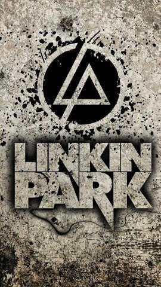

MIEMBROS DE LA BANDA
- Mike Shinoda: Es un músico multinstrumentista, cantante, compositor, rapero y productor
discográfico estadounidense
- Brad Delson: Es el guitarrista líder de la banda de rock, Linkin Park
- Dave Farrell: Es el bajista del grupo de rock alternativo estadounidense Linkin Park
- Joe Hahn: Es un director de videos musicales, también conocido como el DJ en la banda Linkin
Park
- Rob Bourdon: Es el baterista de la banda alternativa Linkin Park
- Chester Bennington: ue un músico, cantante, compositor y actor estadounidense, conocido por
haber sido el vocalista principal y compositor de la banda de rock alternativo Linkin Park
GIRAS MUSICALES
- Projekt Revolution: La gira se lleva a cabo mayormente en los Estados Unidos y Canadá
- Meteora World Tour: Fue una gira de conciertos del año 2004
- A Thousand Suns Tour: Lanzado mundialmente en septiembre de 2010
- Living Things World Tour: Promoción de su quinto álbum Living Things 2012
- The Hunting Party Tour: la undécima gira de conciertos de la banda estadounidense Linkin Park
- One More Light World Tour: Presentación de su séptimo álbum de estudio One More Light,
lanzado mundialmente en mayo de 2017
- Celebrate Life in Honor of Chester Bennington: Se celebró en el Hollywood Bowl el 27 de
octubre de 2017, tres meses después de la muerte de Chester Bennington, y siendo transmitido más de
1,000,000 de espectadores a través de YouTube.
ÁLBUMES DE LA BANDA
- 2000: Hybrid Theory
- 2003: Meteora
- 2007: Minutes to Midnight
- 2010: Productor en la banda Julien-K
- 2012: Cantante de la banda Stone Temple Pilots
- 2014: The Hunting Party
- 2017: One More Light